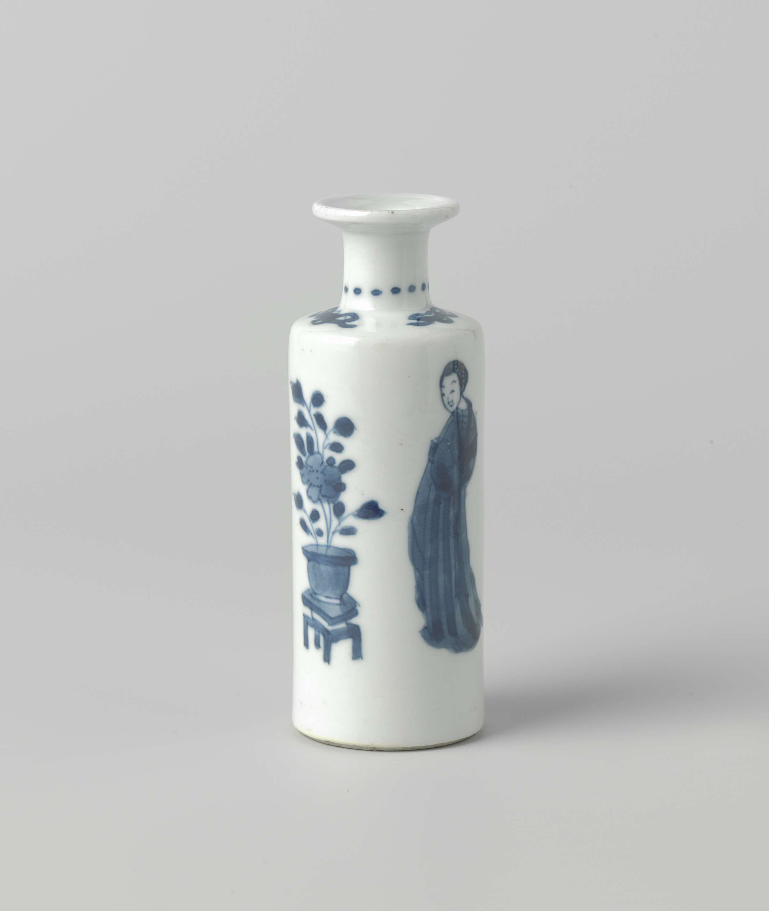
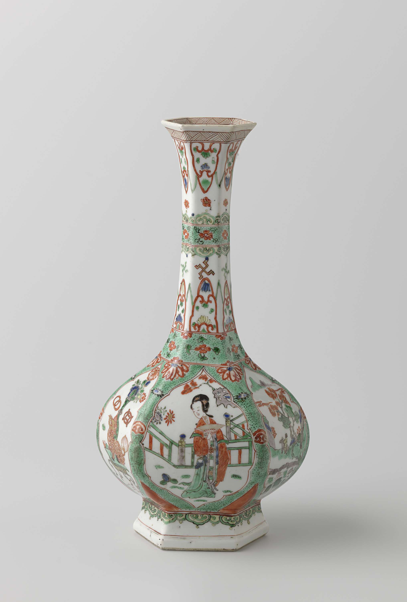
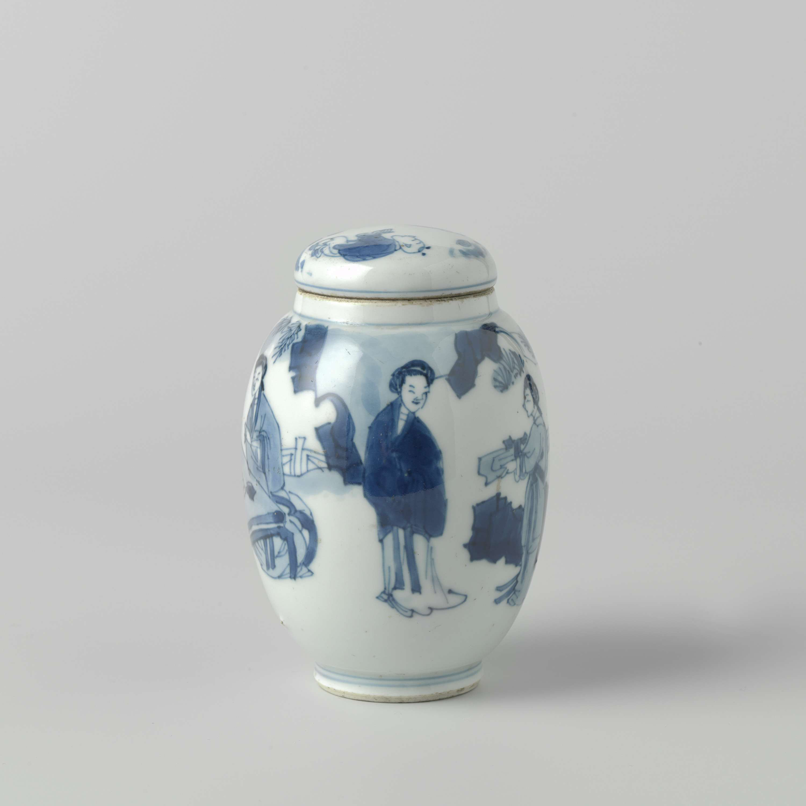
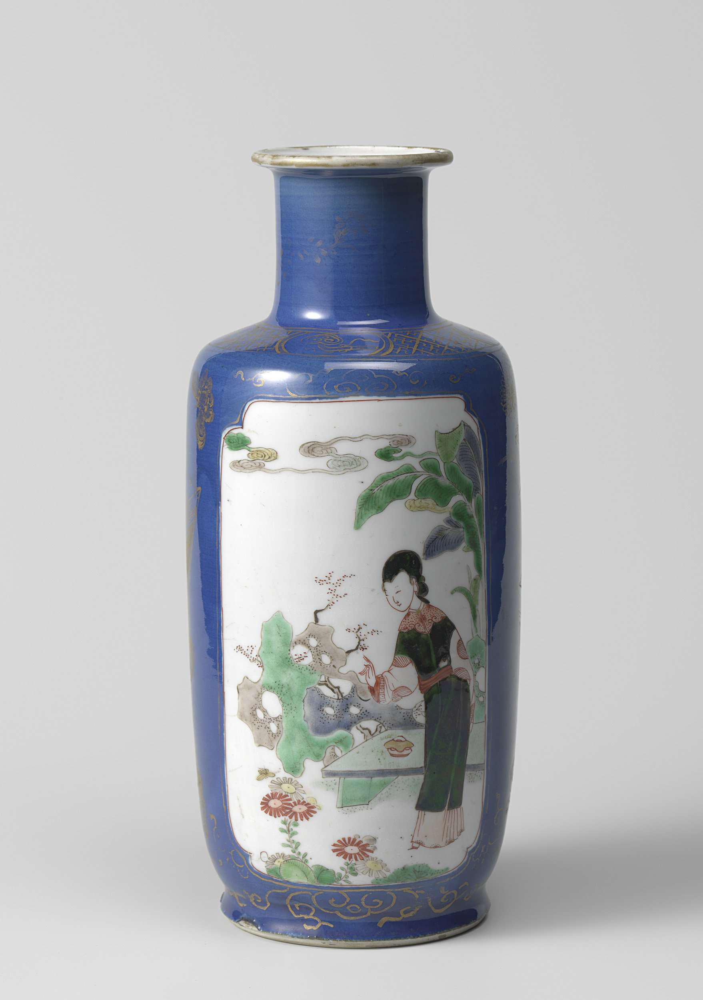
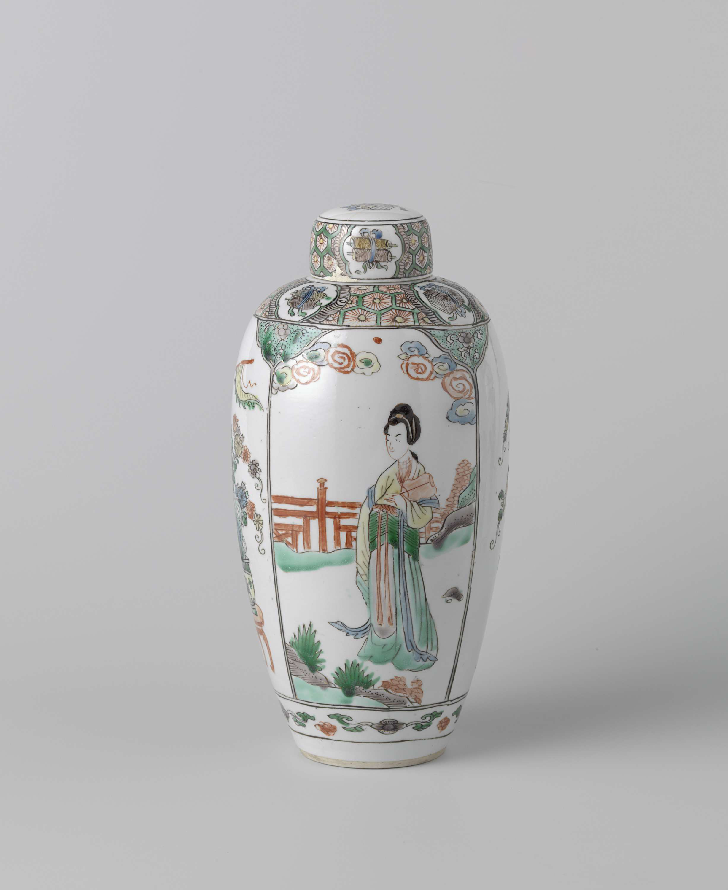

Masterpiece Showcase

Key Characteristics
Imported cobalt pigment
Translucent glaze
Underglaze decoration
Porcelain body (2.5mm thickness)
Production Process
1
Material Selection
Kaolin and porcelain stone selection, washing, settling, and kneading
2
Hand Throwing
Shaping clay on a wheel into various forms requiring deep skill
3
Trimming & Shaping
Refining the semi-dry body for regular form and even thickness
4
Cobalt Painting
Drawing patterns with cobalt pigment for ink wash effects
5
Glazing
Applying transparent glaze to protect decorations and create luster
6
High-Temp Firing
Firing at 1300°C+ to achieve the characteristic blue color
Shape Types

Plum Vase

Spring Vase

Celestial Vase

General Jar

Gourd Bottle
More
Color Ontology
Low-saturation Blue
Mint Cyan
Warm Yellow
Crimson Red
Forest Green
The color palette reflects both technical limitations and aesthetic philosophy, with low-saturation hues embodying Confucian ideals of subtlety. European collectors often interpreted these colors through the lens of their own artistic traditions, leading to fascinating cultural dialogues in color theory and symbolism.